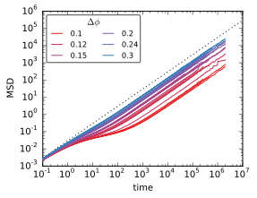

$\alpha_2$ in Monodisperse Systems
November 7, 2014
Wendell Smith
Results for the Physics Paper
- $\alpha_2 \le 1.6$ for equilibrated systems
- monodisperse and possibly bidisperse
- This maximimum occurs at the glassy transition
- Its higher for unequilibrated systems
Recent Data
$(N=100)$
- Long simulations that are more definitively equilibrated
- Run for 4–7 days
- The standard shape of an MSD
- Almost linear for small $\phi$
- Flat region for larger $\phi$

Fourth Power
$\left< x^4 \right>$
- Ratio of $\left< x^4 \right>$ to MSD determines $\alpha_2$:
$$\alpha_2 = \frac{\left< x^4 \right>}{3 \left< x^2 \right>^2 }- 1$$ - $\left< x^4 \right>$ looks similar to $\left< x^2 \right>$
Fourth Power
Without the time-component
- Filled area is between
$3\left< x^2 \right>$ and $\left< x^4 \right>$ - Area corresponds to $\alpha_2$
- $\alpha_2 = \frac{\left< x^4 \right>}{3 \left< x^2 \right>^2 }- 1$

$\alpha_2$
- Goes up to $1.6$, but no higher
- At higher densities, this is increasingly difficult to measure
- As density increases, we expect $\alpha_2$ to remain under $1.6$

Relaxation Time
the duration required for a particle to move one diameter
- Should scale exponentially with $\Delta \phi$
- At higher densities, this is "washed out" by center-of-mass motion

Next Steps
Short-Term
- Change $\Delta \phi$ incrementally to see smooth transitions
- Track crystallization
- Look at bidisperse systems
- Fix ISF to not include center-of-mass motion